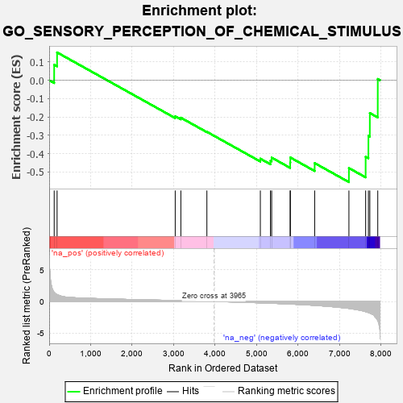
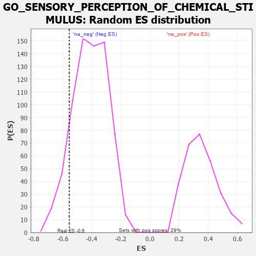

| | | Dataset | 7d |
| Phenotype | NoPhenotypeAvailable |
| Upregulated in class | na_neg |
| GeneSet | GO_SENSORY_PERCEPTION_OF_CHEMICAL_STIMULUS |
| Enrichment Score (ES) | -0.5549145 |
| Normalized Enrichment Score (NES) | -1.3531669 |
| Nominal p-value | 0.10749646 |
| FDR q-value | 0.40054855 |
| FWER p-Value | 1.0 |
Table: GSEA Results Summary

Fig 1: Enrichment plot: GO_SENSORY_PERCEPTION_OF_CHEMICAL_STIMULUS
Profile of the Running ES Score & Positions of GeneSet Members on the Rank Ordered List
| PROBE | GENE SYMBOL | GENE_TITLE | RANK IN GENE LIST | RANK METRIC SCORE | RUNNING ES | CORE ENRICHMENT | | 1 | RTP3 | | | 121 | 1.425 | 0.0844 | No |
| 2 | NCAM2 | | | 191 | 1.085 | 0.1515 | No |
| 3 | LEF1 | | | 3037 | 0.144 | -0.1960 | No |
| 4 | OR5B2 | | | 3173 | 0.126 | -0.2041 | No |
| 5 | REEP2 | | | 3800 | 0.027 | -0.2809 | No |
| 6 | DRD2 | | | 5088 | -0.221 | -0.4272 | No |
| 7 | UBR3 | | | 5332 | -0.281 | -0.4381 | No |
| 8 | ITPR3 | | | 5361 | -0.288 | -0.4215 | No |
| 9 | BBS4 | | | 5806 | -0.407 | -0.4489 | No |
| 10 | BEST2 | | | 5811 | -0.408 | -0.4208 | No |
| 11 | BBS1 | | | 6397 | -0.616 | -0.4513 | No |
| 12 | CNGB1 | | | 7222 | -1.096 | -0.4783 | Yes |
| 13 | TRPA1 | | | 7625 | -1.608 | -0.4165 | Yes |
| 14 | CST1 | | | 7692 | -1.746 | -0.3028 | Yes |
| 15 | ASIC1 | | | 7726 | -1.838 | -0.1786 | Yes |
| 16 | ASIC2 | | | 7917 | -2.995 | 0.0068 | Yes |
Table: GSEA details [plain text format]

Fig 2: GO_SENSORY_PERCEPTION_OF_CHEMICAL_STIMULUS: Random ES distribution
Gene set null distribution of ES for GO_SENSORY_PERCEPTION_OF_CHEMICAL_STIMULUS